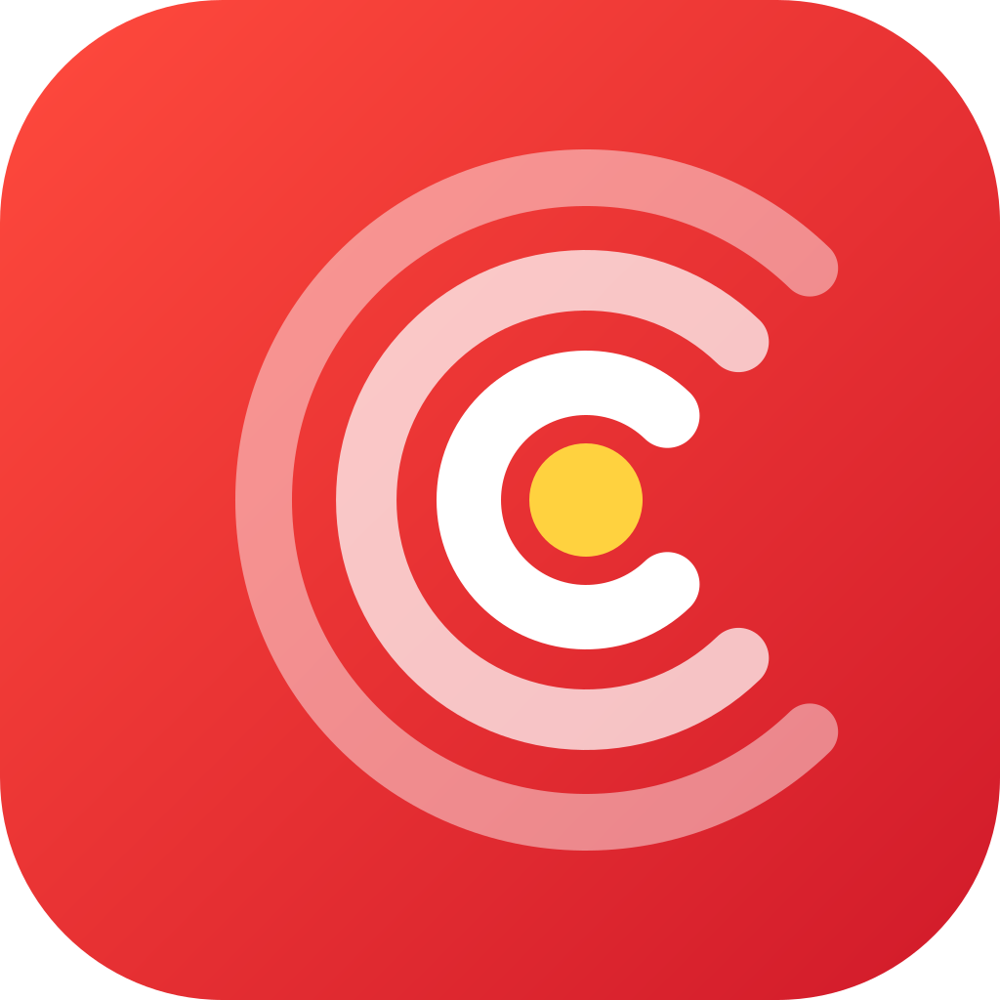
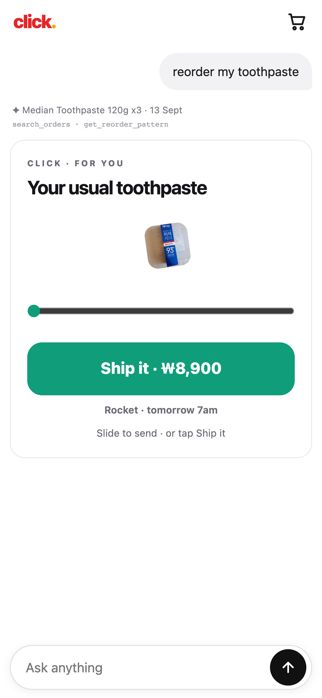
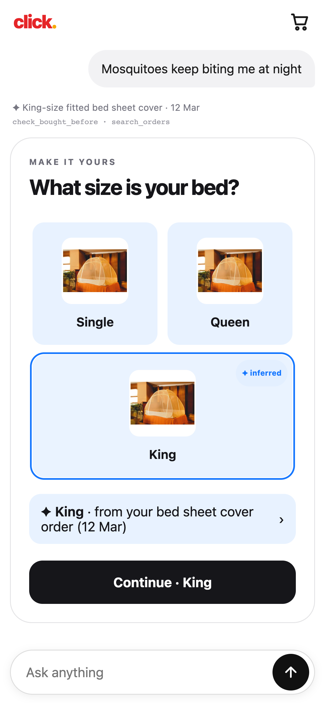
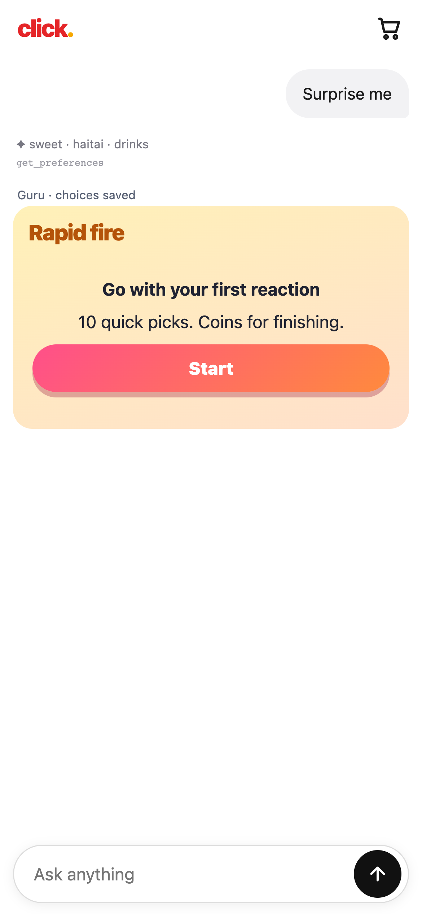
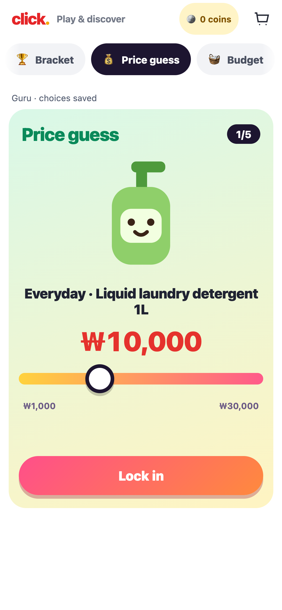
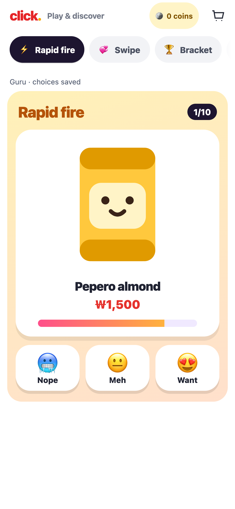
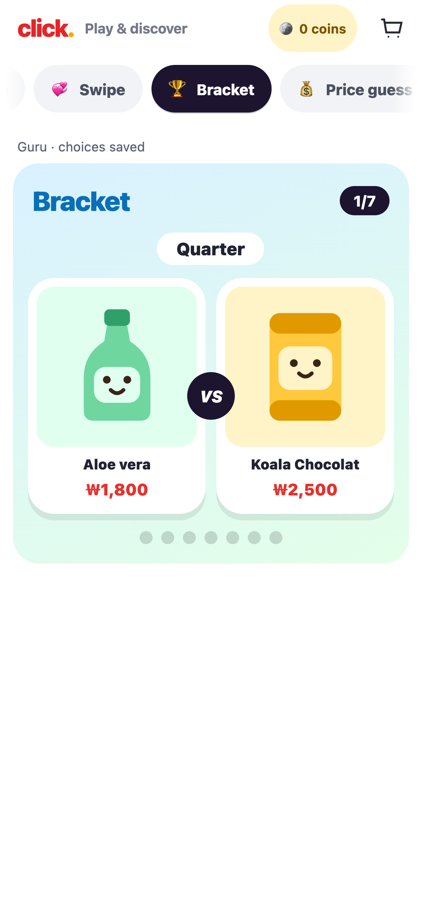
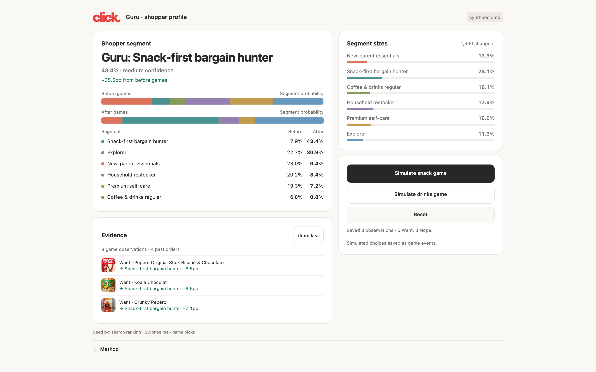

cheok-hamyeon cheok · gets you before you finish
Team 8 · Coupang × OpenAI hackathon

The problem
Shopping apps are one of two screens.
Search bar + feedShopee, Amazon, Coupang. Cluttered, predictable.
The LLM appAn empty screen and a chat box.
The idea
Same simple text box. A new screen every time.


Strong intent · knows what they want
“Reorder my toothpaste.”
search_orders→ Median Toothpaste 120g ×3 · 13 Sepget_reorder_pattern→ every ~6 wks · due nowWeak intent · only a problem
“Mosquitoes keep biting me at night.”
check_bought_before→ King-size fitted bed sheet cover · 12 Marsearch_orders→ past bed and bedroom ordersEach inference cites a real order. A correction becomes a confirmed fact that overrides memory for the rest of the session.
No intent · waiting on the MRT
Short games pass the time and show taste.

Price guess
willingness to pay
Rapid fire
Want / Meh / Nope
Bracket
“which do I like better”Coins pay for finishing, not for particular answers, so the data stays unbiased. 10 coins = ₩100 off at checkout.
What we learn
8 taps moved Guru from 7.9% to 43.4%.

5 Want, 3 Nope in a snack game. Segment probability before and after.
Synthetic shoppers; sizes are the user bases an advertiser could target.
How it works
The LLM calls tools. It never writes UI code.
Phone
One text box. Renders what it is sent.Server
Holds the API key. Nothing secret on the phone.LLM
Reads the request and the user’s context. Picks tool calls.Validator
Every product ID and price is checked against the catalogue.Kit renderer
Pre-built template per tool, 127 variants.Data-lookup tools
search_ordersget_reorder_patterncheck_bought_beforeget_preferencesUI tools · 23
ask_choiceshow_usualcompare_productsship_itnote_inferenceshow_picksEvents
Taps, game picks, corrections.Preference model
Logistic regression, ~190 features. Prior from 2,000 synthetic shoppers.Segment model
6 shopper segments, updated per tap.Next request
Re-ranked picks, “✦ tuned by your picks”.Assumptions
What we are betting on.
- 1Customers already buy repeat items on the platform.Order history is the context. The demo uses 4 seeded orders.
- 2A few taps in a game are enough to place a shopper in a segment.Tested on synthetic shoppers: 56.5% correct after 10 taps, against 19.3% for the baseline.
- 3People will play a 30-second game while they wait.On the MRT or in a lift, for small coin rewards.
- 4An LLM can choose the screen for each request fast enough.First lookup in under 2 s, full screen in 3–4 s.
- 5Customers stay in control.Every inference is shown and can be changed.
Demo data: seeded orders, synthetic shopper population, simulated delivery.
9Half a word is enough.